舊站手記
來自 oliverflute.com 的二十篇文章，保留當年的寫法。
這是舊站 oliverflute.com 的文章，內容保留原貌，只修正排版。其中的考試日期、價錢和課程安排屬寫作當時的資料，請以現行公布為準。想讀整理後的新文章，可以看音樂手記。
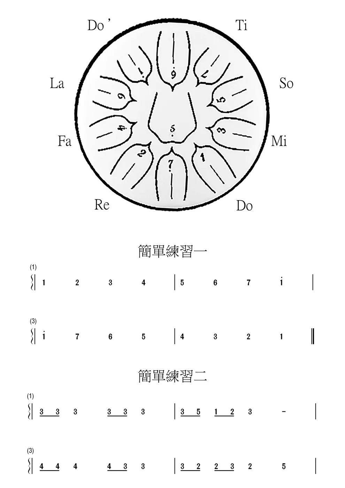
空靈鼓 · 2023 / 12 / 03初學 空靈鼓 - 玩樂器2023 - 2024 華德中學 二年級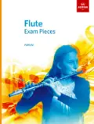
樂器與考試長笛及樂理試 樂器與考試 · 2020 / 04 / 18給準備學習長笛的你長笛初學Q&A
樂器與考試 · 2020 / 04 / 18給準備學習長笛的你長笛初學Q&A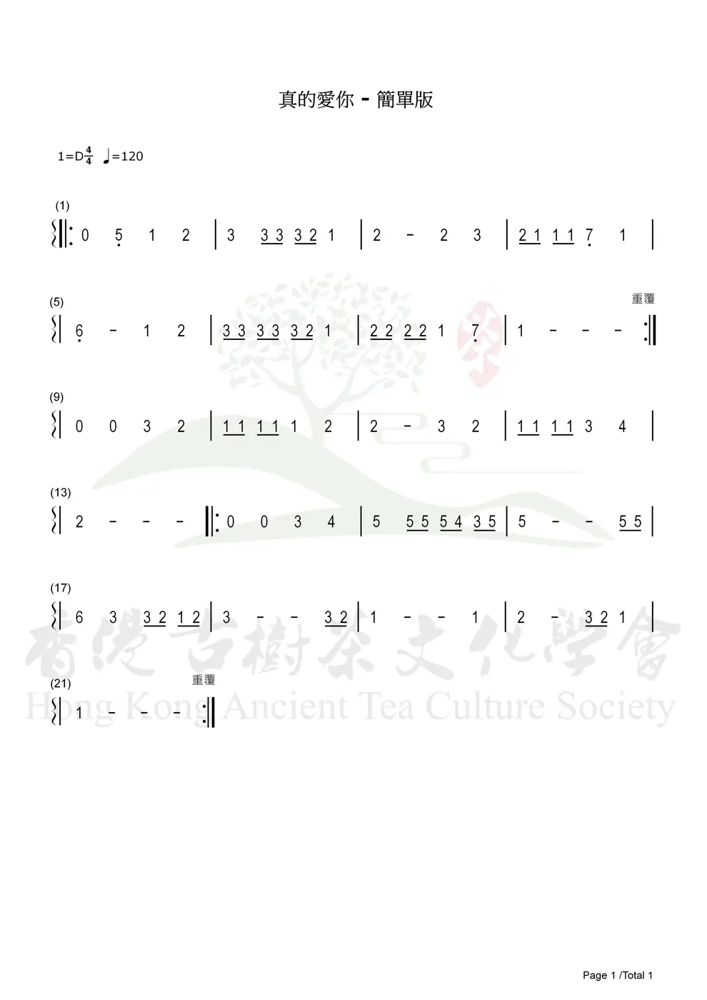
空靈鼓 · 2024 / 03 / 24真的愛你（簡單版）空靈鼓簡譜及演奏示範 練習心得長笛呼吸法的邏輯你懂了嗎?
練習心得長笛呼吸法的邏輯你懂了嗎?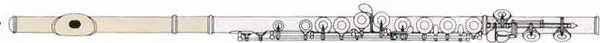
樂器與考試長笛挑選ＡＢＣ貴的不一定對 得心應手才是好樂器 音樂雜談 · 2020 / 02 / 09音樂冷知識音樂與生活息息相關
音樂雜談 · 2020 / 02 / 09音樂冷知識音樂與生活息息相關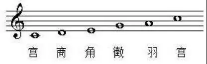
音樂雜談 · 2020 / 04 / 18中國音樂只有五個音！？穿越過去了解五聲音階的迷思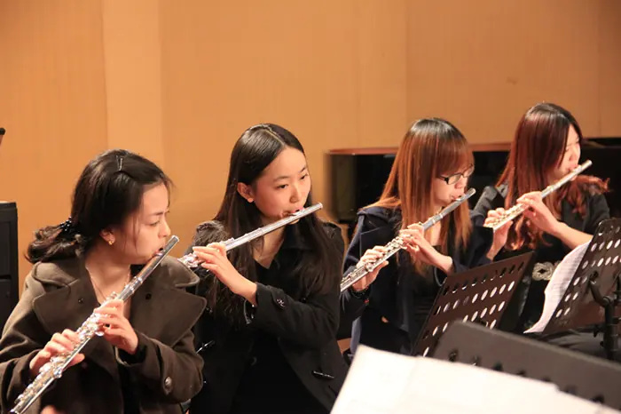
樂器與考試 · 2021 / 01 / 16初學長笛的幾個誤區掌握基礎的長笛吹奏方法樂器與考試 · 2020 / 05 / 07葫蘆絲一件樂器滿足你三個願望 舊站手記 · 2023 / 09 / 19Jesus loves me華德中學
舊站手記 · 2023 / 09 / 19Jesus loves me華德中學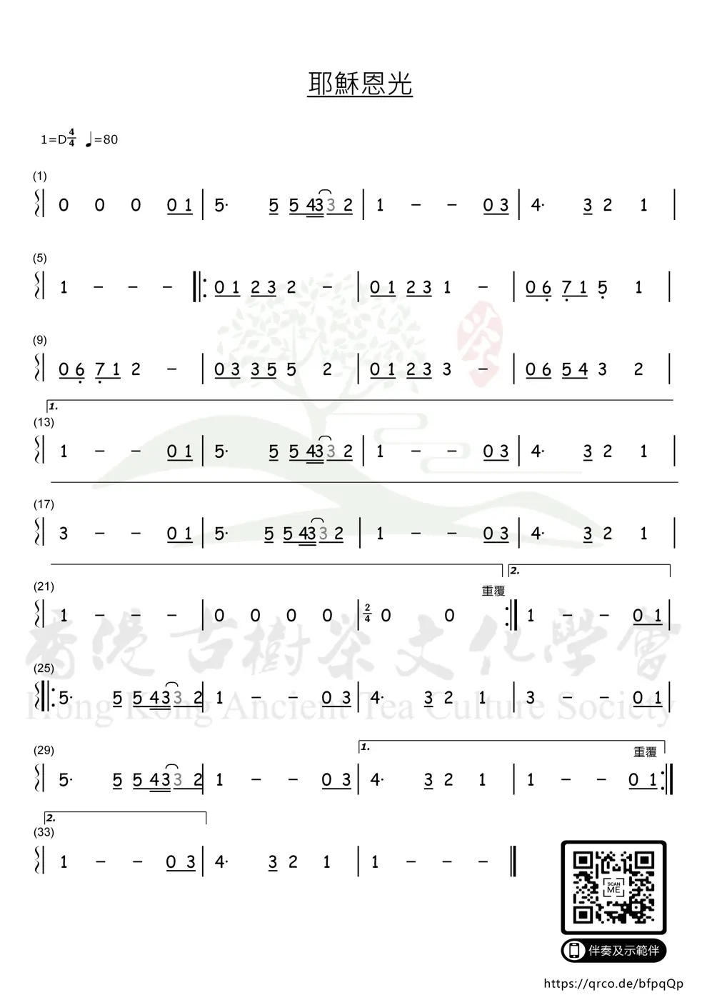
舊站手記 · 2025 / 03 / 16Jesus you shine upon my life 音樂雜談 · 2020 / 04 / 18懂樂器 = 唱歌岩key?誰說學樂器就唱歌一定好聽的!
音樂雜談 · 2020 / 04 / 18懂樂器 = 唱歌岩key?誰說學樂器就唱歌一定好聽的!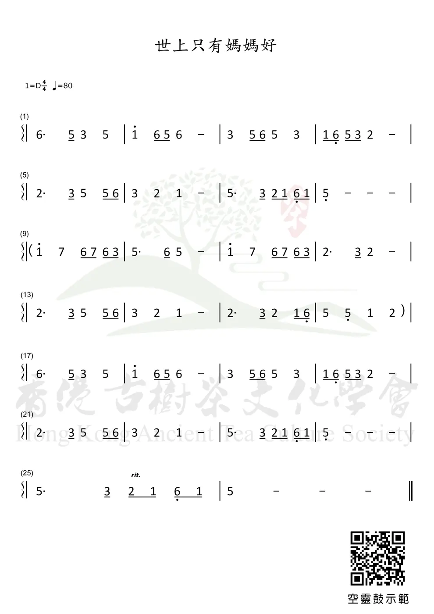
空靈鼓 · 2024 / 03 / 17世上只有媽媽好空靈鼓簡譜及演奏示範 音樂雜談 · 2020 / 09 / 26調音440HZ?聊聊關於國際標準音的傳說練習心得 · 2018 / 06 / 27最有效率的練笛方式練習很累卻很充實樂器與考試 · 2020 / 04 / 17日本動漫配樂常用的樂器日本尺八，你了解嗎？
音樂雜談 · 2020 / 09 / 26調音440HZ?聊聊關於國際標準音的傳說練習心得 · 2018 / 06 / 27最有效率的練笛方式練習很累卻很充實樂器與考試 · 2020 / 04 / 17日本動漫配樂常用的樂器日本尺八，你了解嗎？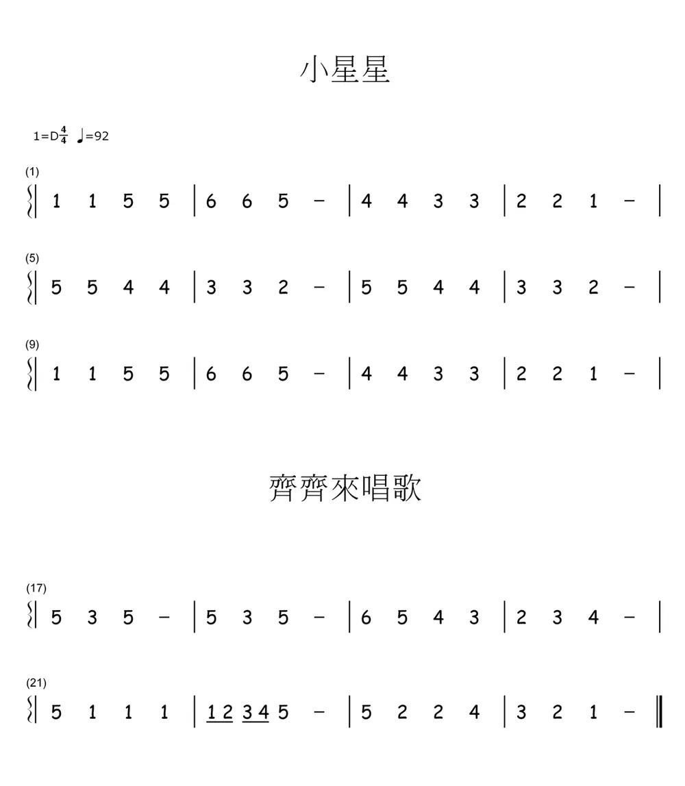
舊站手記 · 2024 / 01 / 23齊齊學唱歌華德中學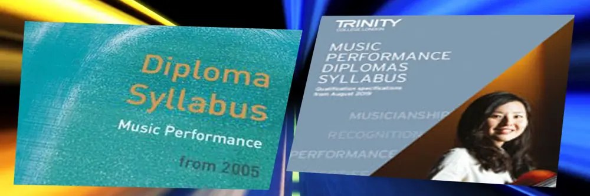
樂器與考試 · 2020 / 04 / 17Trinity 的演奏級到底要哪什麼?8級只是演奏的開始......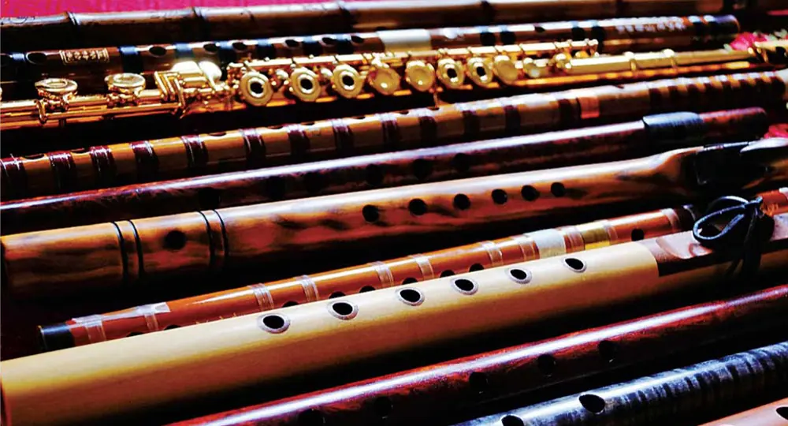
樂器與考試什麼！銀色的長笛屬於這個家族？五級樂理學生們的問題之一